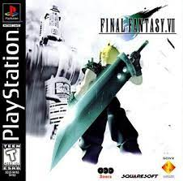

Retro Gamer Cave
PlayStation 1
O Primeiro console da Sony
Empresa fabricante:Sony Computer Entertainment
Desenvolvido por:Ken Kutaragi
Ano de lancamento:1994

Originalmente lançado no Japão em dezembro de 1994, o PlayStation 1 foi a primeira grande aposta da Sony no mercado de games, entretenimento que era considerado como “brinquedo de criança” pelos executivos da empresa. O encabeçado do projeto, o engenheiro Ken Kutaragi, enfrentou muitos obstáculos para criar o console, mas conseguiu entregar o que havia prometido ao presidente da gigante japonesa na época, Norio Ohga. O PS1 foi o primeiro console a vender mais de 100 milhões de unidades, e teve uma grande biblioteca de jogos, incluindo franquias populares como Final Fantasy, Crash Bandicoot e Tekken.
No início dos anos 90, o mercado dava seus primeiros passos em direção à era 3D, e o PlayStation 1 ajudou a pavimentar o terreno para popularizar a tecnologia, já que rodava jogos em CD-ROM e possibilitava melhorias notáveis em aspectos gráficos e de sonoplastia. O PlayStation foi sendo abandonado aos poucos e teve sua produção encerrada em 2006 com a incrível marca de mais de 100 milhões de unidades vendidas em todo mundo.
TOP 3 JOGOS DO PLAYSTATION
- METAL GEAR SOLID(1998): Um jogo de ação e espionagem que revolucionou o gênero com sua história envolvente, seus personagens memoráveis e suas mecânicas de stealth. O jogo coloca o jogador no papel de Solid Snake, um agente infiltrado em uma base militar para impedir um ataque nuclear. O jogo mistura cenas cinematográficas, diálogos, quebra-cabeças e combates, criando uma experiência única e imersiva.Um dos pontos que Metal Gear Solid inovou em sua época, era em suas longas cutscenes e nos diálogos pelo Codec, que apareciam com frequência e com durações generosas, Isso era um marco para época.
- FINAL FANTASY VII(1997):Um jogo de RPG que marcou uma geração com sua trama épica, seu sistema de combate dinâmico e seu elenco de personagens carismáticos. O jogo segue a jornada de Cloud Strife, um ex-soldado que se junta a um grupo de rebeldes chamado AVALANCHE para combater a corporação Shinra, que está drenando a energia vital do planeta. O jogo explora temas como identidade, memória, amor, sacrifício e destino, em um mundo fantástico e futurista.FF VII popularizou a inclusão de chefes difíceis opcionais como forma de desafiar e recompensar o jogador.

- CASTLEVANIA - SIMPHONY OF THE NIGHT(1997): Um jogo de ação e aventura que definiu o estilo “metroidvania”, com sua exploração não-linear, seu sistema de progressão e sua variedade de itens e habilidades. O jogo é uma continuação direta de Castlevania: Rondo of Blood, e conta a história de Alucard, o filho de Drácula, que desperta de seu sono para investigar o misterioso retorno do castelo de seu pai. O jogo possui um design artístico incrível, uma trilha sonora marcante e uma jogabilidade viciante.